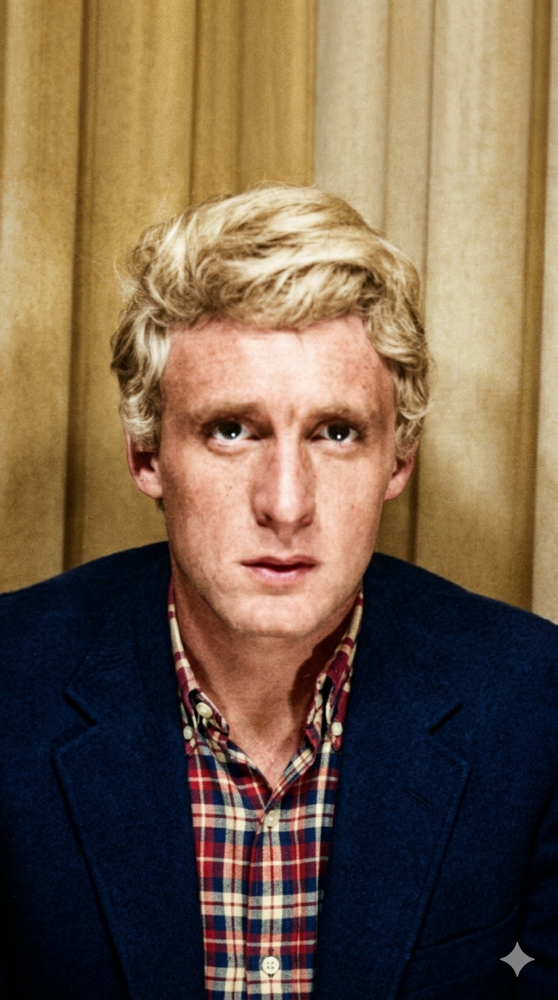

כריסטוף
Daniel Bevilacqua
ניתוח אטימולוגי של השם המלא
דניאל (Daniel)
מקורו בשם המקראי העברי דניאל. השם מורכב משתי מילים: "דן" (שפט) ו-"אל" (אלוהים). המשמעות היא "אלוהים הוא השופט שלי" או "דין אלוהים". זהו שם המייצג יושרה, כוח רוחני וחוסן, ערכים שבלטו באישיותו האינדיבידואליסטית של הזמר.
בווילאקווה (Bevilacqua)
שם משפחה איטלקי מרתק המורכב משתי מילים: Bevi (שתה) ו-l'acqua (את המים). המשמעות המילולית היא "שתה את המים". היסטורית, שם זה ניתן ככינוי לאנשים שהיו ידועים בכך שאינם שותים יין אלא רק מים, או לעיתים ככינוי אירוני לאלו שהיו שותים יין בכמויות גדולות. השם מעיד על שורשיו האיטלקיים העמוקים של כריסטוף (סבו היגר לאזור פריז מאיטליה).
כריסטוף (Christophe)
השם נגזר מהשם היווני Christophoros. המשמעות היא "נושא המשיח". כריסטוף בחר בשם זה כשם במה בתחילת שנות ה-60, כשהוא מחפש שם קצר, קליט ובעל ניחוח מודרני אך קלאסי בו זמנית, כזה שיפריד בין זהותו הפרטית לבין דמות ה"דנדי" הלילית שיצר.
ילדות בצל הג'וקבוקס והמרד בלימודים
שורשים וניגודים: דניאל בווילאקווה נולד בז'וביסי-סיר-אורז' (Juvisy-sur-Orge), פרוור של פריז. הוא גדל בבית שבו האב היה יצרן מכשירים לחימום וסבו היה מהגר איטלקי שבנה את עצמו במו ידיו. כבר כילד, דניאל הפגין חוסר עניין מוחלט במסגרות. הוא נחשב לילד "מורד" שסולק ממספר בתי ספר בגלל התנהגות ואי-ציות.
ההתאהבות במוזיקה האמריקאית: הנחמה היחידה שלו הייתה בבתי הקפה המקומיים, שם עמד שעות מול ה"ג'וקבוקס" (מכונת התקליטים). הוא הוקסם מהבלוז, מהרוקנרול של אלביס פרסלי ומהג'אז. בגיל 16 הוא הקים את להקתו הראשונה, "La Gachette" (ההדק), והחל להופיע במועדונים קטנים כשהוא משלב בין הצרפתית לבין הצליל האמריקאי המחוספס.
היצירה בבדידות: ילדותו התאפיינה בחיפוש אחר זהות. הוא בילה לילות שלמים בחדרו, מפרק ומרכיב מכשירי חשמל וגיטרות, מה שפיתח אצלו חוש טכני יוצא דופן לסאונד – דבר שהפך למאפיין המרכזי שלו כאמן בוגר.
אידאולוגיה אמנותית והישגי ענק
ה"דנדי" של הלילה: האידאולוגיה של כריסטוף הייתה בנויה סביב מושג ה"דנדיזם" – אדם המקדיש את חייו לאסתטיקה, אלגנטיות ואינדיבידואליזם. הוא היה ידוע כ"איש לילה" שער בלילות וישן בימים. הוא האמין שהאמנות צריכה להיות חוויה רב-חושית, ולכן הקדיש שנים לחיפוש אחר "הסאונד המושלם", תוך שימוש בסינתיסייזרים נדירים ובטכניקות הקלטה חדשניות.
הישג - הפריצה ההיסטורית עם "Aline": בשנת 1965, כשהוא רק בן 20, כריסטוף שחרר את הבלדה "Aline". השיר הפך לתופעה תרבותית ומכר מיליוני עותקים בתוך שבועות, והפך לאחד השירים המושמעים ביותר בהיסטוריה של צרפת. הישג זה קיבע אותו כסמל של רומנטיקה מודרנית.
הישג - שיתוף הפעולה עם ז'אן מישל ז'אר: בשנות ה-70, כריסטוף שיתף פעולה עם אשף האלקטרוניקה ז'אן מישל ז'אר באלבום המופת Les Mots bleus. האלבום נחשב לאבן דרך ששינתה את פני השאנסון והכניסה לתוכו אלמנטים אלקטרוניים וחלליים, מה שזיכה את כריסטוף בתואר "העתידן של המוזיקה הצרפתית".
סיבת היצירה: הקובץ נבנה כחלק ממחקר מקיף להוקרה והנצחת דמותו של כריסטוף כאמן שגשר בין הבלדה הרומנטית לניסיונות אלקטרוניים נועזים.
חמשת היצירות הגדולות (יוטיוב)
• מקורות למחקר המעמיק:
- Christophe, résonance de l'inconnu - ביוגרפיה מקיפה מאת ז'אן-לואי בלה (Jean-Louis Bellet).
- ארכיוני ה-INA הצרפתי - תיעוד הופעותיו הטלוויזיוניות והראיונות הליליים לאורך 50 שנה.
- Vivre la nuit - תיעוד אישי על אורח חייו כ"דנדי" לילי.
- ארכיון המכון הלאומי לסטטיסטיקה (INSEE) - לתיעוד שורשי משפחת בווילאקווה בצרפת.